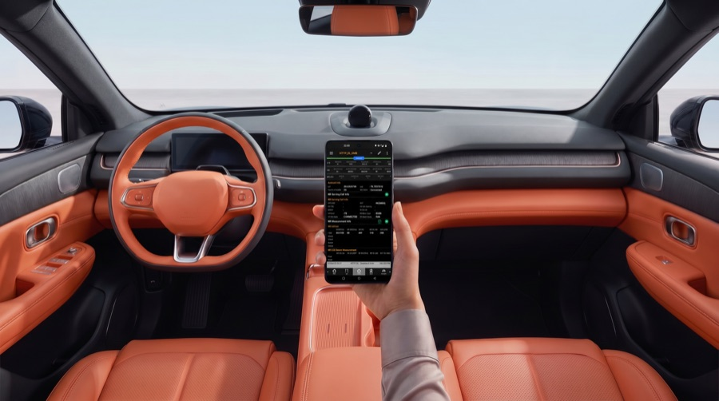

Sigma-ML
Portable radio and service measurement
Sigma-ML combines automated service testing with L1–L3 radio visibility on supported smartphones. Use it for indoor and outdoor measurement, local investigations and scheduled testing.

Overview
Indoor and outdoor measurement on a supported smartphone
Collect measurements directly on a prepared smartphone, with live views of supported radio and service data. Save logs for analysis, use indoor location markers or available outdoor location data, and run configured test operations automatically.
Why engineers reach for it
Smartphone-based collection
Collect supported L1–L3 data and view it on the smartphone during measurement.
Run supported tests using scheduling and unattended options. Monitor battery and storage status during collection.
Run supported FTP, HTTP, ping, SMS and voice operations according to the configured script.
Mark indoor positions, record available outdoor location data and collect supported Wi-Fi measurements such as RSSI and SSID.
Supported configurations provide call control, recording, silence detection and SIP/RTP measurements, with POLQA where licensed and available for the relevant build.
Mark special points of interest during the walk so they are easy to find again in later analysis.
The engineering case
Automated tests, radio visibility and voice measurement
Run configured service tests, inspect supported radio and protocol data, and assess available voice-quality measurements.
Configure supported data, ping, SMS and voice operations to run automatically. Scheduling and remote options support unattended measurement in configured deployments.
Sigma-ML collects and displays application-layer results together with L1, L2 and L3 radio data, from radio quality up to the protocol, so engineers can investigate a problem from the device side.
Investigate supported VoLTE, SIP/RTP and voice-quality data, with licensed quality algorithms where available for the selected device and build.
What it does.
What it measures.
Why it matters.
Portable measurement on supported Android devices. Feature availability depends on the handset, chipset, firmware, Android version and licence.
- Smartphone-based collection for indoor and outdoor measurements
- Collects Layer 1, 2 and 3 data on the smartphone itself
- Displays collected data from Layer 1 to Layer 3 in real time on various views
- Runs FTP DL/UL, HTTP DL, voice origination and termination, SMS and ping tests
- Records GPS location outdoors; location markers indoors
- Saves logged data to memory card or the phone's internal memory
- Collects Wi-Fi data such as RSSI and SSID
- Options for unattended, scheduled and automated testing
- Exports collected data to CSV and DLF formats
- Supported devices and chipsets confirmed against the current compatibility list
- 5G NR, LTE and supported legacy cellular technologies
- Supported radio, throughput, mobility and voice-quality measurements
- Associate outdoor measurements with available location data
- Real-time decoding of Layer 3 protocol data
- Various views, such as charts, for quick analysis
- Battery level and storage size monitoring
- Logs supported natively by Sigma-PA for post-analysis
- Supported VoLTE, SIP/RTP and silence-detection measurements, with licensed POLQA options where available
- Collect supported measurements without carrying a laptop for data collection
- Access indoor environments inaccessible to drive test vehicles
- Portable deployment using prepared smartphone hardware
- Choose Sigma-ML for portable radio and service measurement; ask our team to compare its device and workflow fit with Sigma-AQ.
- User Event Marker flags points of interest for further analysis
- Unattended measurements in configured remote or fixed-location deployments
- Scheduled measurements at fixed locations
- Use supported commercial smartphone hardware for portable measurement